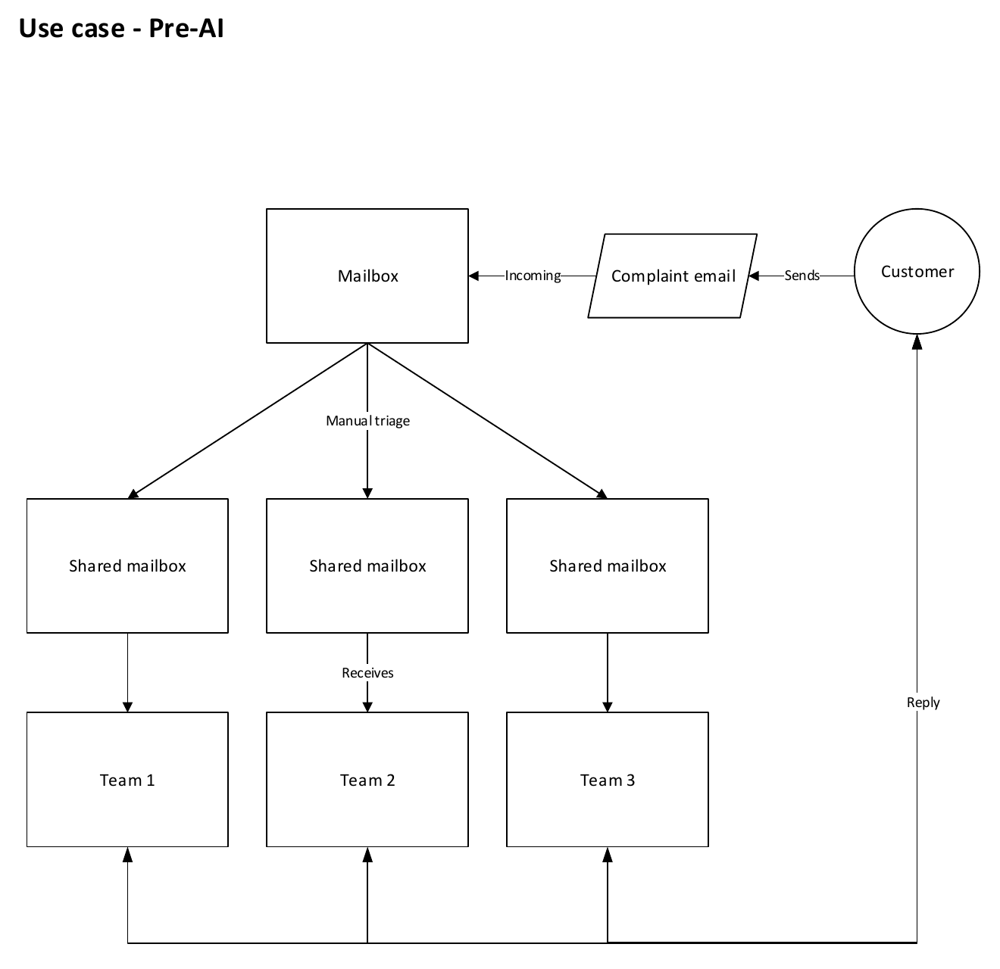
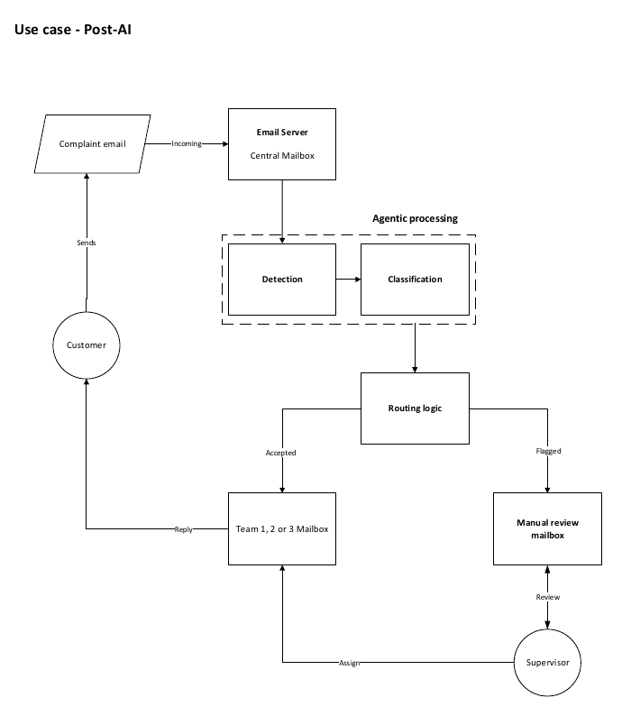
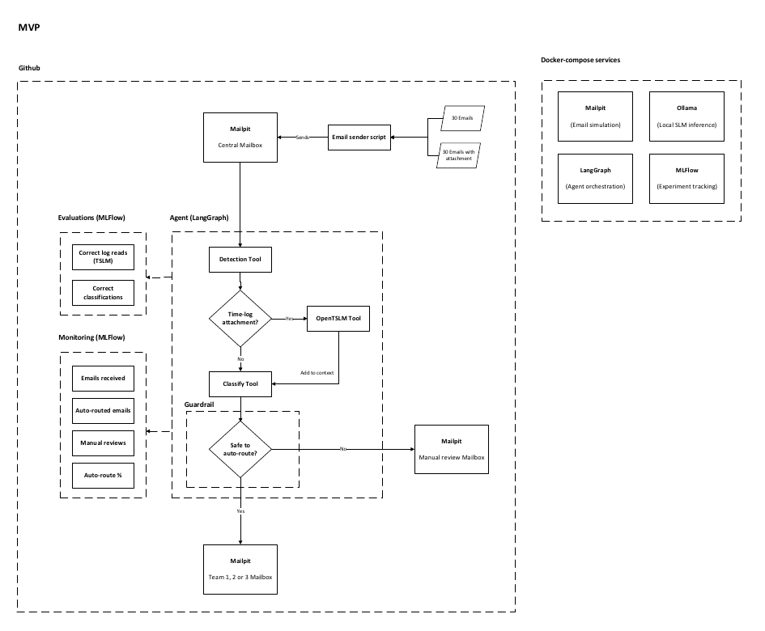
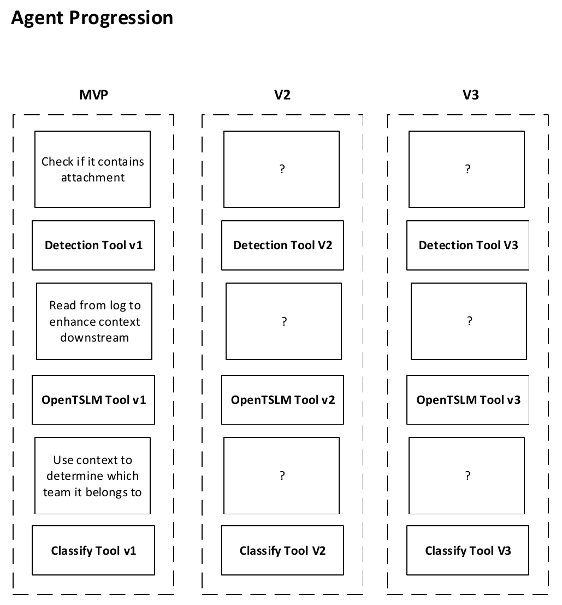

AI-Assisted Triage for Inquiries
Can an AI agent get routine emails to the right team faster while sending unclear cases to a person?
The industry problem
Customers email companies about bills, subscriptions, orders, and technical issues. When those messages land in a shared inbox, someone has to read each one and decide who should handle it. A wrong handoff adds rework and delays the response.
McKinsey's 2026 customer care survey describes support teams facing limited budgets and rising customer expectations. It also describes a shift toward always-on service, with AI helping handle routine tasks such as email responses and people handling more complex cases.
AI could change the workload in both directions. Customers may send more inquiries if AI makes them easier to draft and follow up on, while better self-service could resolve some issues before an email is sent. Our proof of concept will test whether automated triage can maintain fast, accurate handoffs as volume rises.
The idea so far
Give customer inquiries a single entry point. The agent would suggest a destination such as Billing, Orders & Delivery, or Technical Support. Clear cases could go directly to a team, while unclear cases would go to Manual Review.
Question for the team. Which inquiry types should we try first, and which should always go to a person?
Manual triage

AI-assisted triage

The MVP
The current prototype detects incoming test emails and forwards them with their attachments to Manual Review. MLflow records each run. The diagrams show the proposed routing design and how the agent could evolve from there.
View the MVP repository on GitHub
MVP architecture

Agent progression

The business case
Faster handoffs could reduce the time inquiries spend waiting, and fewer incorrect assignments could reduce staff rework. To estimate the value, apply measured staff time savings to the pilot team's inbox volume and compare it with setup and ongoing operating costs.
Proposed KPIs
- Time to handoff: time from email arrival to delivery to a team or Manual Review.
- Wrong-mailbox rate: share of automatically routed emails sent to the wrong team.
- Automation coverage: share of incoming emails routed directly to a team.
- Staff time per inquiry: time spent reading, assigning, reviewing, and correcting handoffs.
Questions for the team. What are the current inbox volumes, staff costs, and triage times? What would integration, model hosting, maintenance, and human review cost?
The business pilot
Ask a pilot support team to label a representative set of inquiries and time its usual triage process. Run the agent on the same set and record its proposed destinations while staff retain control of delivery. If the routing results meet the agreed error limit, try a small supervised rollout to measure actual staff time and rework.
The case is supported if the pilot reduces staff time and handoff delays within the agreed error limit, and the estimated value exceeds operating costs. If those criteria are missed, the pilot should show whether to narrow the scope, revise the workflow, or stop.
Questions for the team. Which business and inbox will we pilot with? What sample size, duration, and pass criteria should we agree before starting?
Industrialization
- Scaling. What peak inbox volumes and handoff times must the service support? How should it recover from backlogs or failed deliveries?
- Infrastructure. Which mail platform and hosting environment should we use? What access, retention, monitoring, and fallback controls will be required?
- People. Who owns routing rules, reviews exceptions, and responds to incidents? What training and feedback process will support teams need?